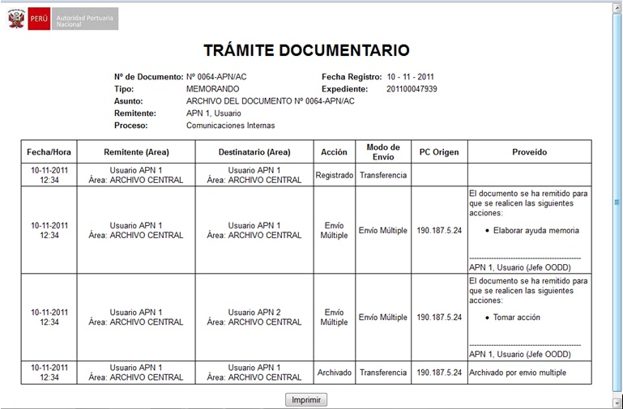
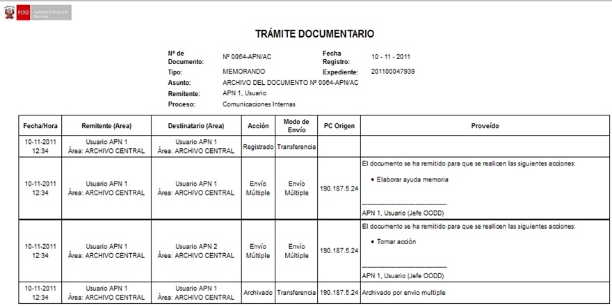

Hoja de Ruta:
Seleccionamos un Documento y en el Detalle seleccionamos Hoja de Ruta.

Al seleccionar en la Hoja de Ruta, muestra la siguiente pantalla : En donde se muestra las diferentes áreas por la que paso el Documento, se muestra la acción, el modo de envío, el nombre de la Pc de Origen; además se visualizan los proveídos.

También tienes la opción de poder Imprimir, la Hoja de Ruta, como podemos ver en la siguiente pantalla:

Created with the Personal Edition of HelpNDoc: Easy CHM and documentation editor